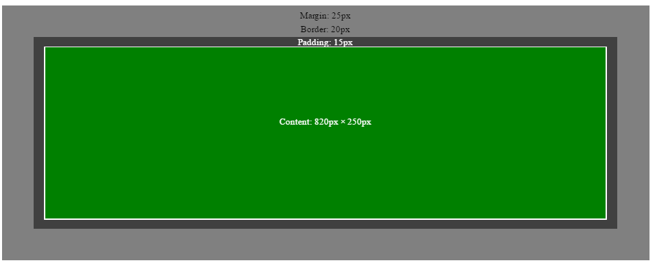
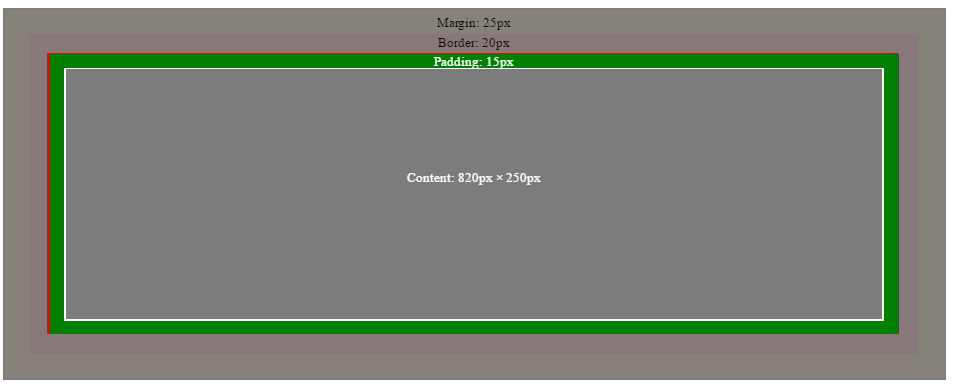
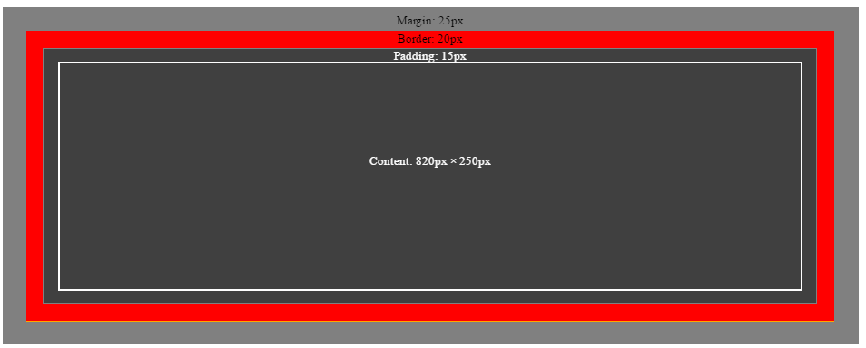
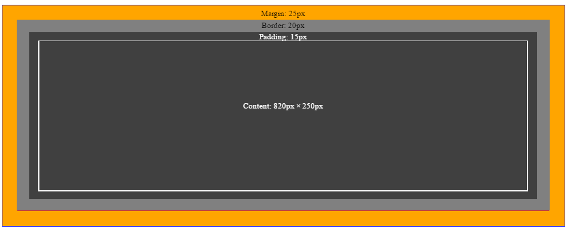
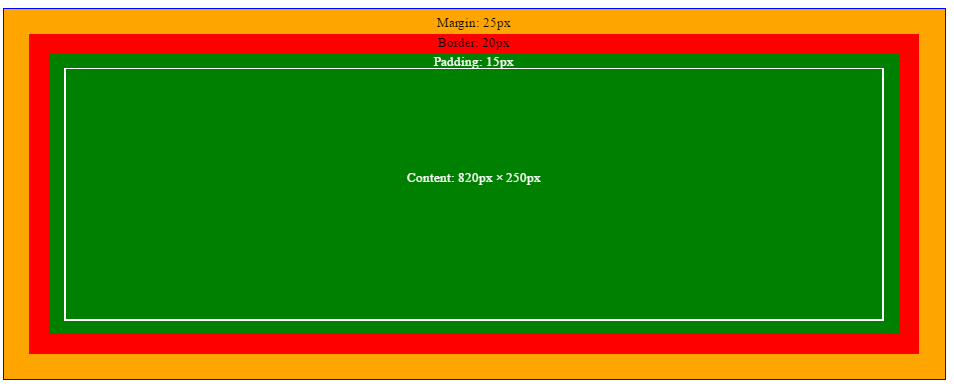
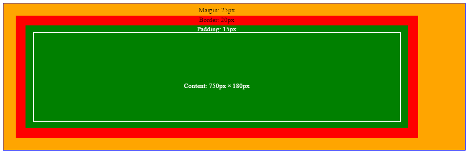
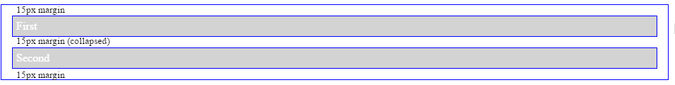

← Back to Blog
The CSS Box Model
Jan 17, 2017
Intro
One of the most poorly understood components of a web application is the styling. Many of the developers I've worked with haven't taken the time to learn the principles that CSS relies on — especially how the rules cascade — and how padding, margins, borders, and content create the layouts of a page.
The latter is called the "box model" and is what we'll be looking at today.
The box model is composed of four parts:
- Content
- Padding
- Borders and
- Margins
Content

CSS Box Model Content
In a block element, the content area is determined by:
- The height and width, if set, otherwise
- The height and width of its content
In an inline element (almost anything directly containing text) the content area is determined by:
- The line-height and width, if set, otherwise
- The height of a line (font size), and the width of its container
It's important to note that inline element's borders, padding, and margins will apply to each line that the content appears on.
Padding

CSS Box Model Padding
Padding is the space between the border and the edge of the element's content area. You can think of it as a margin between the border and content.
Background colors only apply to the content area, and padding space.
Borders

CSS Box Model Border
Borders begin immediately outside of the content area, which is essentially all you need to know. This is true for both inline and block elements.
Background colors apply to all space inside the border.
Margins

CSS Box Model Margin
Margins begin just outside of the border, and determine the space between it and the elements around it.
Box-sizing
The CSS box-sizing property can cause exceptions to the above rules. The two valid values for box-sizing are:
Content-box

Our original CSS Box
Content box is the default value for this property in CSS, and means that elements will behave as shown above. In other words, the content determines height and width, or if set explicitly, the height and width control the size of the content area.
This means that an element which has a width of 50px with 5px of padding, a 1px border, and 3px of margins would take up 50px + (5px + 1px + 3px) * 2 (two sides) = 68px of width.
Border-box

The same box but using border-box
In this case, the width and height, when set, control the size of the element including content, padding and borders. Only the margins are not included.
This means that an element which has a width of 50px with 5px of margins would take up 50px + 5px * 2 (two sides) = 60px of width,
regardless of padding or borders.
Padding-box
This value is not supported is most browsers, but if/when supported the height and width would include both the content and padding.
Margin collapsing
Another important exception to these rules is margin collapsing. Margin collapsing means that instead of two element's margin's being "added" together, they simply lay on top of one another, and the larger margin is displayed.
Margin collapsing occurs in 3 basic cases:
- Adjacent sibling elements
- Parent whose first or last child's margins collide with parent margin
- Empty elements
Adjacent sibling elements

Note how the center margin is 15px instead of 30px
If two tags are located one after another then their margins will collapse.
Parent with first/last child margin collision
This occurs when the top margin of a parent element "touches" the top margin of its first child, or when the bottom margin of a parent element "touches" the bottom margin of its last child.
In either of these cases, the child element margin is "pushed" outside of the parent element, and the larger of the two is what will be displayed.
Empty blocks
When a box's top and bottom margins touch (because there is no content), then the margins will collapse. Meaning it will essentially only have one margin, which is the largest of the two.
Summary
The CSS box model is very simple — once you understand and apply it — knowing these fundamental rules of CSS layouts, as well as the gotchas that can occur, should help you make quick work of many common layout problems.